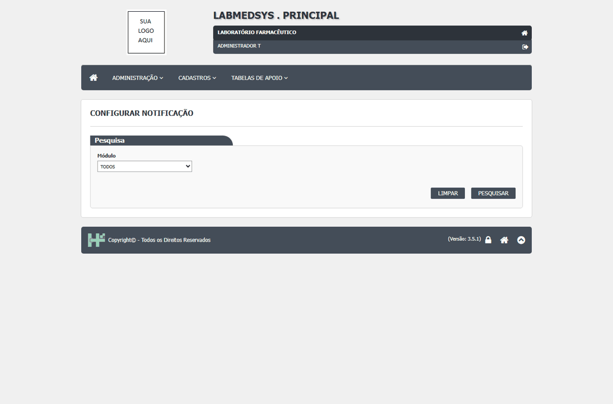
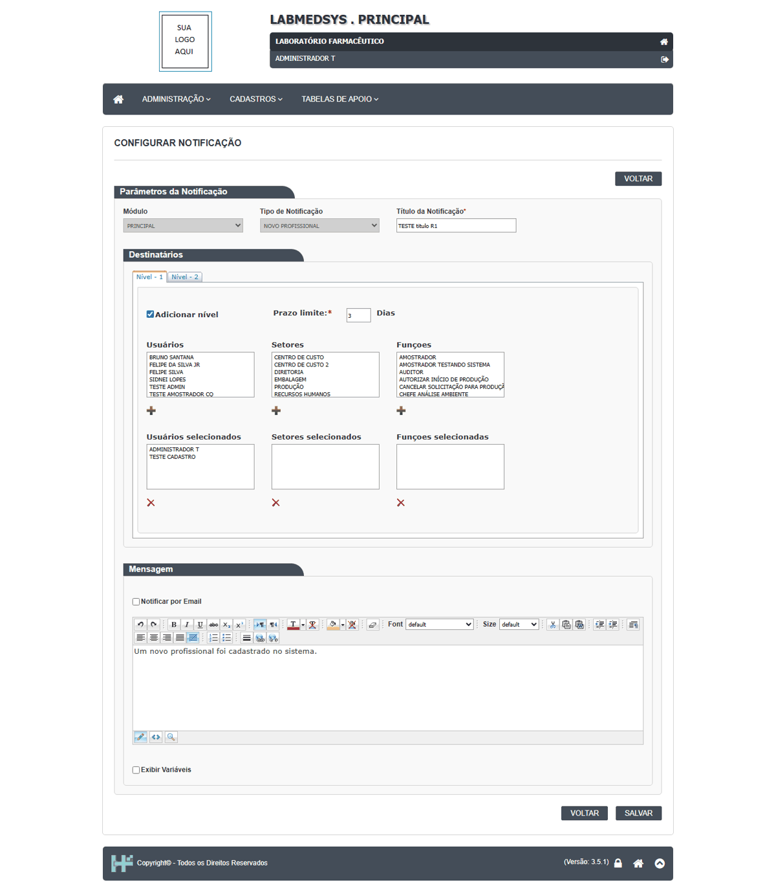
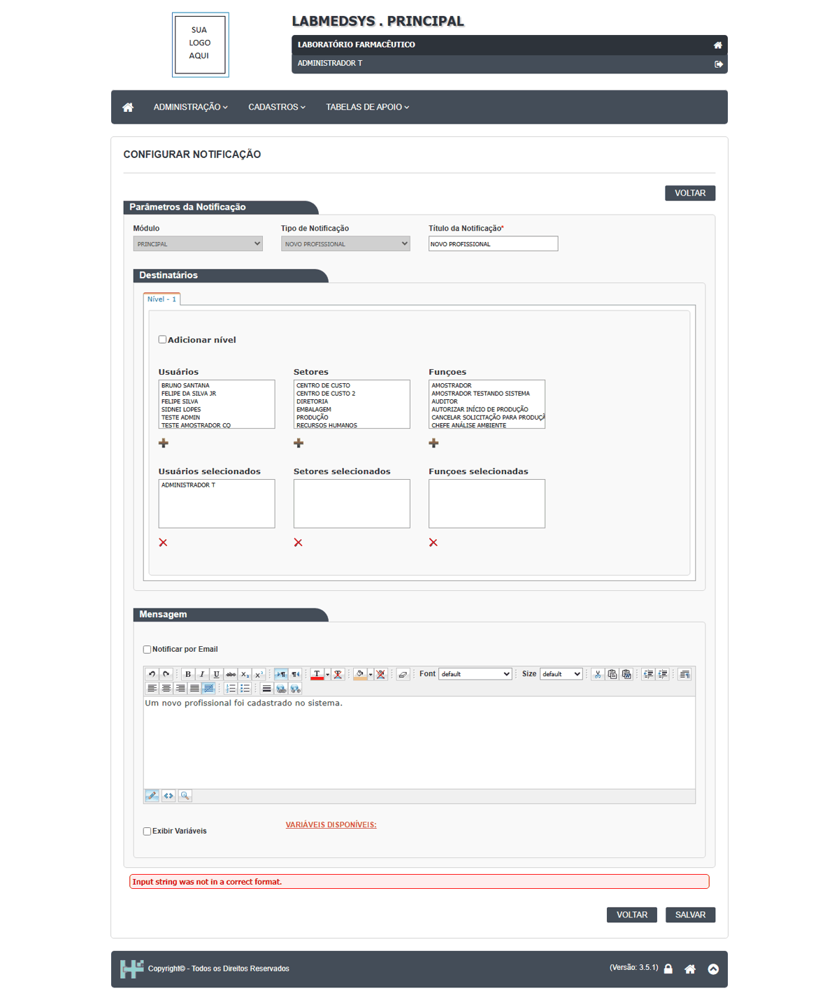

DV-PRI-029 · Configurar notificação grava sem confirmação, sem justificativa, sem mensagem e sem histórico
Mudar o título e quem recebe a notificação do tipo "NOVO PROFISSIONAL" (acrescentei TESTE CADASTRO e o Nível 2 com prazo) foi gravado sem a pergunta "Confirma a alteração do item?", sem campo de justificativa, sem mensagem de sucesso e sem pedir senha. A tela não tem ícone de histórico: ninguém consegue saber depois quem mudou quem é avisado de um evento. O prazo `-1` também foi aceito.
Como reproduzir o erro, passo a passo
- Abrir Administração › Configurar notificação e clicar em Alterar Configuração do tipo NOVO PROFISSIONAL.
- Marcar Adicionar nível, prazo 3 dias, título TESTE titulo R1, acrescentar TESTE CADASTRO em Usuários selecionados.
- Clicar em SALVAR.
- Reabrir o tipo: o título e o destinatário novos estão gravados. Procurar um ícone de histórico (não existe).
Esperado
Pergunta de confirmação, justificativa obrigatória, mensagem de sucesso, histórico (quem, quando, valor antigo e novo) e, pela decisão de assinatura eletrônica, nova autenticação. Prazo negativo recusado.
Obtido
Gravou em silêncio. Sem confirmação, sem justificativa, sem senha, sem histórico. Prazo -1 aceito (ficou gravado).
Evidência (captura da tela)


DV-PRI-037 · Nenhuma gravação da Administração pede senha de novo (assinatura eletrônica desligada)
Em nenhuma das telas de Administração testadas a gravação pediu login e senha de novo: só a pergunta SIM/NÃO (ou nem ela, em Configurar notificação e Configuração). Quem deixa a sessão aberta permite que outra pessoa mude quem recebe os avisos de qualidade, os grupos e a configuração do sistema, em nome do usuário logado.
Como reproduzir o erro, passo a passo
- Em cada tela citada, alterar um registro TESTE e salvar.
- Observar se aparece janela de login e senha.
Esperado
Nova autenticação (assinatura eletrônica) em alterações críticas.
Obtido
Não aparece em nenhuma.
Evidência (captura da tela)

DV-PRI-030 · Configurar notificação: erro técnico "Input string was not in a correct format." ao salvar
Ao abrir o tipo "NOVO PROFISSIONAL" e clicar em SALVAR sem mexer em nada, a tela mostra em vermelho o texto técnico **"Input string was not in a correct format."**. O mesmo acontece com o Nível 2 marcado e o prazo em branco ou com letras. Só foi possível salvar marcando e desmarcando "Adicionar nível" ou preenchendo o prazo.
Como reproduzir o erro, passo a passo
- Abrir Administração › Configurar notificação › Alterar Configuração do tipo NOVO PROFISSIONAL.
- Sem alterar nada, clicar em SALVAR.
- Repetir marcando Adicionar nível e deixando o Prazo limite vazio ou abc.
Esperado
Salvar sem alterações não dá erro; prazo inválido recusado com frase clara ("O prazo deve ser um número de dias").
Obtido
"Input string was not in a correct format." (texto de erro do .NET) e nada gravado.
Evidência (captura da tela)
